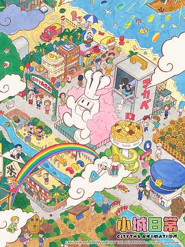
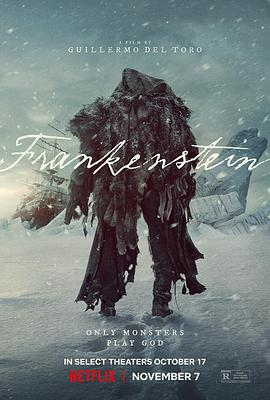
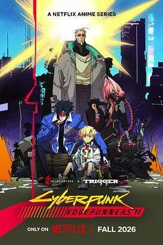

2025年7月 25 条
2025-07-26 22:01:50
2025-07-19 11:44:42
看过 墙外之音 / 84제곱미터 ★★★☆☆
还以为编剧要在币圈做什么文章，结果是我肤浅了，竟然是这么离谱的故事。很多细节没有展开讲，感觉为了把剧情编离谱而做了很多没有用起来的叙述。
2025-07-19 07:00:12
玩过 未知作品 ★★★★☆
游戏做的很用心，还有教学档案，其实也很适合女生玩。这游戏要是10多年前出来就好了，那时候身边好多男PUA (Pick-Up Artist)特别会撩妹，其实也就是这些技巧。
2025-07-18 20:33:43
还以为说的是deepseek
2025-07-15 21:40:55
想玩 猿公剑
2025-07-14 10:39:59
2025-07-12 21:41:18
想看 砖墙谜攻 / Brick
2025-07-12 08:34:04

还是之前的配方！ //说到京阿尼，就来查查京阿尼，nichijou 赛高！
2025-07-11 13:53:39
2025-07-11 13:52:00

2025-07-11 13:50:57
2025-07-11 13:49:12
2025-07-11 13:47:51
2025-07-11 13:38:34
关注榜单 高分无厘头电影榜
2025-07-11 13:37:38
想看 白头神探 / The Naked Gun: From the Files of Police Squad!
2025-07-08 22:18:56
看过 我的世界大电影 / A Minecraft Movie ★★★☆☆
作为一个没有深度玩过MC的观众来说，标准的爆米花电影。惊喜的地方估计是小狼妹竟然变成了监护人，有点期待下个月wednesday S2了
2025-07-08 22:00:55
看过 人类之子 / Children of Men ★★★☆☆
设定很新奇，当然也很架空，末日里有值得信任的朋友真是幸福，在一个没有孩童声的世界里，有娃也是幸福
2025-07-07 17:14:12
2025-07-07 11:55:39

棒！
2025-07-06 11:31:02
看过 完美的日子 / Perfect Days ★★★★☆
完美的日子就是这样日复一日，每天听着喜欢的音乐，做着自己喜欢的事情，看喜欢的书，每天经过Tokyo Skytree，看到同样的人和你过着一样的悠闲生活，没有过度的工作，yadayada。东京就是这样以一个可以让任何人都可以过自己想过的生活的地方啊，我觉得阿德莱德也是这样
2025-07-03 22:18:13
想看 鱿鱼游戏(美版) / Squid Game: America
2025-07-02 21:19:49
想玩 未知作品
2025-07-02 21:18:15
想看 新·驯龙高手 / How to Train Your Dragon
2025-07-02 19:03:16
2025-07-01 19:57:16
看过 鱿鱼游戏 第三季 / 오징어 게임 시즌 3 ★★★★☆
就短短的6集，真的名副其实的 第二季（下）。结局还算满意吧，虽然捣毁了，但是弄出来了个鱿鱼游戏宇宙。